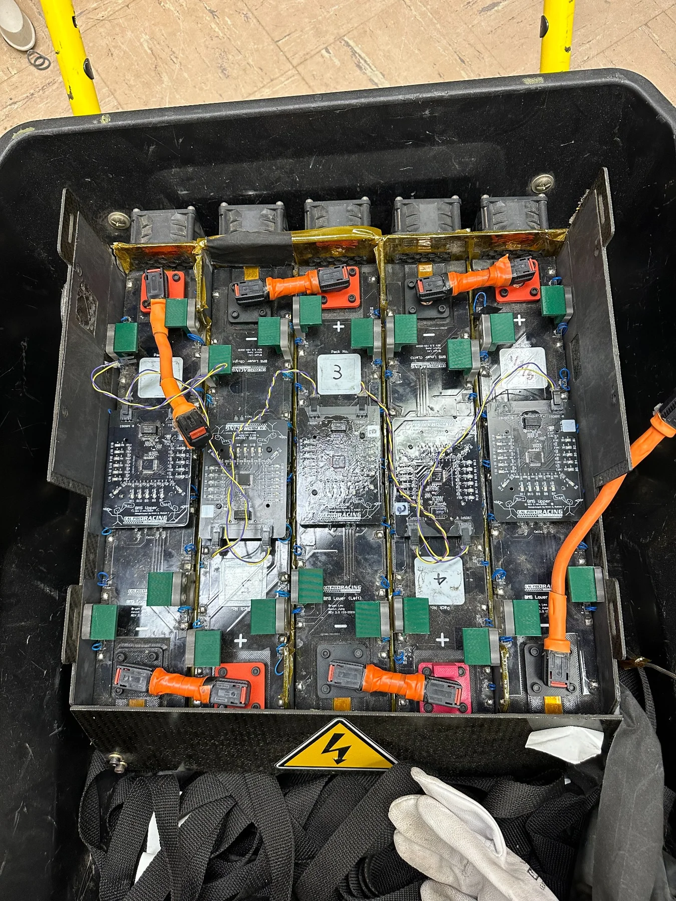
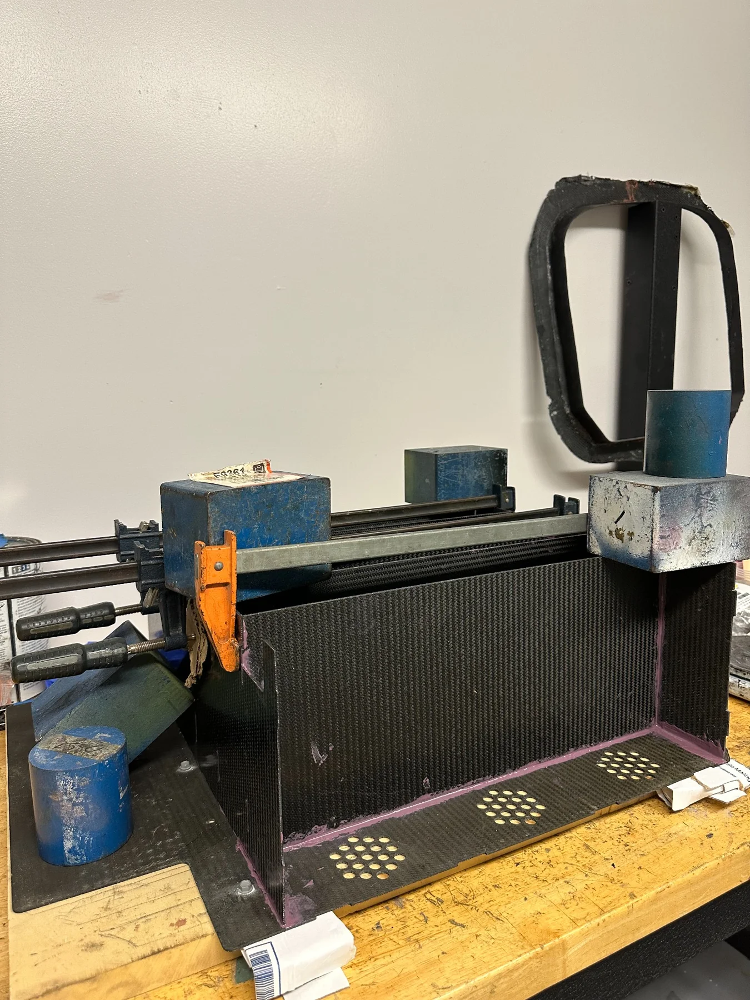
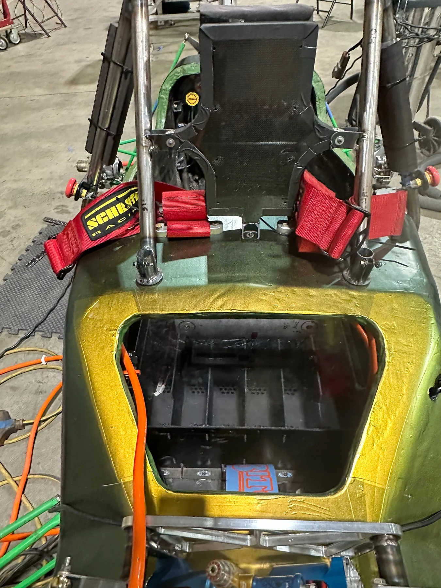

Packaging and serviceability.
Worked with teammates on strap-compatible lifting tabs and with the composites team on the carbon-fiber panel layup. Balanced energy, thermal, weight and service requirements.
FORMULA SAE / BATTERY SYSTEMS / 2023–2024
Led and contributed to accumulator design, fabrication and integration as Cal Poly Racing addressed energy, cooling, weight and serviceability challenges.
Cal Poly Racing improved from 19th overall in 2023 to 12th in 2024. These are team achievements, not outcomes attributable to the battery redesign alone; thermal management still limited pace.


The previous season exposed two connected accumulator challenges: maintaining competitive pace with limited usable energy, and managing temperatures that forced the team to slow down.
As Battery Systems Lead for the 2024 season, I worked with the team on a redesigned accumulator with increased cell count, revised airflow, lighter structural panels and more practical removal features. The completed system incorporated 480 cells. A graduate student on the team led the detailed cooling-airflow redesign.
We replaced aluminum structural panels with carbon fiber panels in collaboration with the composites team. We also developed lifting tabs for straps, making the accumulator easier to remove from the car for servicing.
Worked with teammates on strap-compatible lifting tabs and with the composites team on the carbon-fiber panel layup. Balanced energy, thermal, weight and service requirements.
Bonded composite panels, placed Nomex insulating paper, assisted with machining polycarbonate cell carriers, waterjet-cut nickel strips, welded cell connections, and bent busbars for battery and HV/LV components.
Helped integrate mechanical, electrical and manufacturing elements into a completed accumulator, and supported team coordination and technical review as Battery Systems Lead.
03 / DESIGN FOR MANUFACTURE
One hands-on challenge involved fabricating busbars with complex bends. Our original CAD work did not fully account for bend relief and the material-specific bending assumptions needed for accurate flat patterns.
After encountering difficulties during bending, we updated the CAD models to reflect the correct material and bending requirements, fabricated replacement busbars and successfully installed them in the accumulator.
This iteration made the relationship between material properties, bend allowances and manufacturable geometry especially tangible.
04 / IN THE SHOP
Photographs from the team's development and assembly process, showing the battery modules, enclosure fabrication, and vehicle-level packaging.



05 / COMPETITION & LESSONS
At the 2024 Formula SAE Electric competition, Cal Poly Racing completed all 22 endurance laps for the first time. The team improved from 19th overall in 2023 to 12th overall in 2024. This reflects the entire team's effort across the vehicle.
Thermal management remained a constraint during the 2024 endurance event, so I would not claim a measured temperature improvement or attribute the overall placement change to our accumulator alone.
My biggest takeaway was how closely design, fabrication and serviceability are linked—from collaborating on composite parts and lifting features to revising busbars after discovering forming problems in the shop.
See experience in my résumé